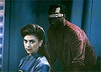
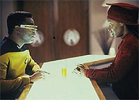
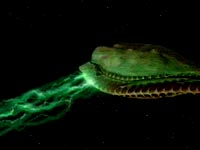
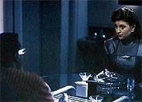

|
MANCHETE
DO EPISÓDIO
Continuação
de "Booby Trap" prevê
problemas de
relacionamentos virtuais
Episódio
anterior | Próximo
episódio
Sinopse:
Data Estelar: 44614.6.
Geordi La Forge se prepara para receber uma ilustre visita: a dra.
Leah Brahms, projetista-sênior dos motores da USS Enterprise. O
engenheiro está empolgado, e não é para menos: há um ano,
durante uma crise, ele recriou a imagem de Brahms no holodeck para
ajudá-lo a solucionar um problema de engenharia e acabou
desenvolvendo interesses românticos por ela. Mas quando a
verdadeira Leah chega, Geordi descobre que ela não é nada daquilo
que parecia ser no holodeck, dificultando as coisas para o
engenheiro.
 Enquanto
isso, a Enterprise encontra uma criatura que vive no espaço. Ao se
aproximar, a nave é atacada e Picard é obrigado a atirar no alienígena,
acidentalmente matando-o. Após fazer leituras de sensores, Data
descobre que a criatura está grávida.
Apesar do perigo para a nave, Picard decide por ajudar, ordenando a
dra. Crusher a usar os feiseres da nave como bisturis para fazer uma
cesariana. A operação é um sucesso, com um incômodo inesperado:
a criatura acha que a Enterprise é sua mãe.
As energias da nave passam a ser drenadas pela criatura, como se ela
estivesse mamando na Enterprise. Geordi e Leah acabam colocando de
lado suas diferenças e trabalham juntos na solução do problema
--"azedando o leite". Eles mudam a frequência da energia
recebida pela criatura, tornando-a desagradável para ela.
O procedimento faz com que o ser se desprenda do casco, salvando a
Enterprise na última hora de um ataque por outras criaturas
semelhantes. Após o sucesso do plano, Leah e Geordi acabam se
tornando bons amigos.
Comentários:
"Galaxy's
Child" tem um tom profético ao antecipar em alguns anos
algo que só passa a ser um tema importante nos dias de hoje --o
estreitamento de laços feito por intermédio do computador. Em vez
de usar a Internet e uma sala de bate-papo, Geordi acaba indo parar
no holodeck, onde ele se apaixona pela "imagem virtual" da
dra. Leah Brahms.
Embora o paralelismo não seja preciso, muitos dos problemas
enfrentados pelos dois são os mesmos que ocorrem hoje em dia. O
principal deles é a inevitável conclusão de que a imagem de uma
pessoa na Internet não corresponde ao que ela é fora do mundo
virtual, por mais honesta que ela esteja sendo.
Não é uma questão de fingimento. O fato é que as pessoas se
comportam de forma diferente quando estão conversando virtualmente
--algumas características são exacerbadas, outras desaparecem,
algumas surgem do nada. É muito difícil, por exemplo, encontrar um
internauta que haja com timidez, embora existam muitas pessoas tímidas
no mundo.
 Outro
problema desse tipo de contato é citado pela própria Guinan, em
conversa com Geordi. "Você viu o que queria ver", ela
disse. Na Internet, a coisa funciona do mesmo jeito. A quantidade de
informação sensorial que você recebe de uma pessoa é mínima
--em geral, é preciso preencher as lacunas com a imaginação.
A conclusão do episódio também vale para a vida real: no fim,
Geordi e Leah conseguem romper essas diferenças
"virtuais", estabelecendo um novo e sólido relacionamento
de amizade. Não é o que o engenheiro esperava, mas é o que
sobrou, depois de retirado o "visor" que o fazia ver
somente o que queria.
O "recado" do episódio é exposto de forma sutil e é
mais um lembrete de que a condição humana não pode ser
reproduzida em computador. Assim sendo, funciona duplamente como
continuação do episódio "Booby Trap", da
temporada anterior. Além de ser uma continuação de fato, trazendo
elementos da história anterior para o novo episódio, também é
uma continuação ideológica --a defesa da idéia de que o ser
humano não pode e não dever ser substituído por máquinas.
 A
história envolvendo a criatura espacial também é interessante e
mantém o espírito de exploração pioneira que tanto fascina em Jornada
nas Estrelas. Graças a ela também temos bonitas cenas de
efeitos visuais, como as criaturas do cinturão de asteróides, o
nascimento do "Junior" e o ataque da criatura-mãe.
Há um uso pioneiro de CGI (imagens geradas por computador) na criação
dessas cenas. As criaturas não são modelos, mas imagens eletrônicas.
Hoje em dia isso é corriqueiro, mas em 1991 era uma grande
novidade.
Por fim, vale dizer que o episódio traz para o primeiro plano
Geordi La Forge, em uma tentativa de melhor desenvolver seu
personagem. Embora se mostre uma figura simpática e carismática,
Geordi infelizmente não teve a chance de se desenvolver muito ao
longo da série, como o fizeram Data ou Worf.
 Os
episódios que trazem Geordi como destaque normalmente batem nas
mesmas teclas. A da vez é a dificuldade do engenheiro em lidar com
as mulheres, algo que já havia sido usado intensivamente em "Booby
Trap". Um uso mais interessante do personagem foi feito em "The
Enemy", do terceiro ano, mas acabou sendo desprezado ao
longo da série como um possível gancho para elevá-lo a um novo
patamar.
Citações:
La Forge - "Hi...
I mean, welcome aboard, doctor Brahms. I am Lt. Commander Geordi La
Forge, Chief Engineer."
("Oi... quer dizer, bem-vinda a bordo, doutora Brahms. Eu sou o
tenente-comandante Geordi La Forge, engenheiro-chefe.")
Brahms - "La Forge... So you're the one who's fouled up my
engine designs."
("La Forge... então você é o sujeito que bagunçou meus
designs do motor.")
Beverly - "Captain, I'd like to announce the birth of a
large baby ...something."
("Capitão, gostaria de anunciar o nascimento de um grande bebê
...alguma coisa.")
Data - "Sir, is the appellation 'Junior' to be the life-form's
official name?"
("Senhor, o apelido 'Junior' será o nome oficial da forma de
vida?")
Trivia:
 Em um "blooper", o recém-nascido é visto grudado à
Enterprise acima do hangar de estibordo, que sempre foi o Hangar 3.
Porém neste episódio ele é chamado de Hangar 2...
Em um "blooper", o recém-nascido é visto grudado à
Enterprise acima do hangar de estibordo, que sempre foi o Hangar 3.
Porém neste episódio ele é chamado de Hangar 2...
Esta
é a segunda aparição da dra. Leah Brahms. Ela já havia aparecido
(sob forma holográfica) no episódio do terceiro ano "Booby
Trap".
Jana
Marie Hupp, aqui como alferes Pavlik, volta a aparecer no episódio "Disaster",
da quinta temporada, como tenente Monroe.
O
tubo Jefferies, chamado assim por causa do diretor de arte da Série
Clássica, Matt Jefferies, finalmente aparece na Enterprise-D
neste episódio, após ter sido apenas citado na terceira temporada,
em "The Hunted".
Ficha
técnica:
História de Thomas
Kartozian
Roteiro de Maurice Hurley
Direção de Winrich Kolbe
Exibido em 11/03/1991
Produção: 090
Elenco:
Patrick Stewart como
Jean-Luc Picard
Jonathan Frakes como William Thomas Riker
Brent Spiner como Data
LeVar Burton como Geordi La Forge
Michael Dorn como Worf
Gates McFadden como Beverly Crusher
Marina Sirtis como Deanna Troi
Elenco convidado:
Susan Gibney
como dra. Leah Brahms
Lanei Chapman como alferes Rager
Jana Marie Hupp como alferes Pavlik
Whoopi Goldberg como Guinan
April Grace como Hubbell
Episódio
anterior | Próximo
episódio
|